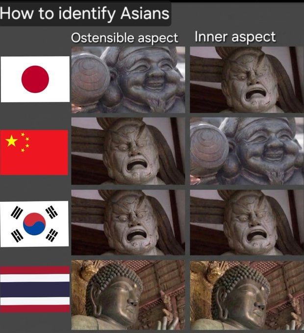

내가 느낀 동남아인들 기본적으로 착하고 순수하긴 함 근데 미래에 대한 투자가 없고 출세욕이 없음.. 그냥 오늘 번거 오늘 다 쓰자 마인드.. 한중일 마인드는 어떻게든 벌어서 내 개인 출세든 국가의 발전이든 이게 집단화(?) 되어있는데 동남아는 그런게 없음 그래서 발전하는 한중일보고 존나 부러워하고 시기질투 오짐
겨울이 있는 아시아랑 아닌 아시아는 다르지
대비안해놓은유전자는 다 얼어굶어뒤졌어
다 환경에 따라 다르고 그 태어난곳도 운이고
요즘 많이 느낌
운칠기삼 성공했다고 절대 자만하지 말기
운없었으면 열심히 해도 성공 못함
항상 겸손하기 내가치관임 남욕하는거 할 때 한번은 생각하기
겨울 유무 얘기 재밌다
운칠기삼 성공했다고 절대 자만하지 말기
운없었으면 열심히 해도 성공 못함
항상 겸손하기 내가치관임 남욕하는거 할 때 한번은 생각하기
맞말이긴 한데 대만도 있다구
존나 게으름 시발
유렵도 똑같음 ㅋㅋㅋㅋㅋ 얘내들도 미래에 대한 뭐 없음 몇 달 벌어서 여름에 스페인가야지 이딴 생각 뿐
출처 서조선이겠네
북대만
태국은 내면이 여자여야 맞는 그림아니냐
대놓고 중국출처네
그냥 허허 웃고 넘겨라 븅신들아. 뭔 출처가 어딘지를 따지고 있어 ㅋㅋㅋ 짤 하나에 감정이입 디지네ㅋㅋㅋㅋ
출처 찾는게 발끈 하는거 처럼 보이냐?
그냥 병신 같아서 어디서 그렸나 찾는 거잖아
병신 새끼가 ㅋㅋㅋ
해외나가서 화나있는 표정 높은확률로 우리나라긴했음
태국이 만들었나보네 ㅋㅋ 겉으론 웃고있어도 뒤돌면 칼찌할려 드는게 동남아 습성인데 뭔 ㅋ
한국은 맞는말이긴한데 ㅋㅋ
한국인들은 다른나라 비해서 표정부터 좀 표독스러운 느낌이긴 함
한국: 겉😊 속😡
일본: 겉😊 속😡
중국: 겉😡 속😡
동조선과 서일본은 하나인가!
내 안의 괴력난신이...!
한국이랑 일본이랑 걍 ctrl C V 임 걍 한국, 일본만큼 국민성의 장점, 단점, 사회문제 모든게 겹치는 나라도 드묾.
평균적으로 걍 참을성 있고 도덕성은 다른나라보다 높다보니 심성이 나쁜건 아님 그래서 치안은 안전함.
근데 그들의 서클에 들어가면 겉으로 하하호호 웃는데 뒤에서 뒷담 존나 함.
그룹안에서 약점이라도 잡히면 그걸로 은따 당함 근데 둔하면 모르지 겉과 속이 다른데
ㅋㅋㅋㅋㅋㅋㅋㅋ일관적이네
뚱하거나 표독하면 한국인 맞던데
태국놈들 시발 뭐하나 잘못하면 엘보로 사람 줘패드만
내용을 떠나서 저기에 태국이 왜 끼냐ㅋㅋㅋ
중국 지랄한다 ㅋㅋ
한국: 시발 시발
일본: 하잇 칙쇼
중국: 샤갈 따거
중국은 예전엔 웃음기가 있었겠지만
중국딸배들 인생 보니까 웃기 어렵겠더라
태국 배트남 쉐리들 알바 써보면 저게 맞어 지살거 목표금액만 딱 하고 가버려 일은 늦게 배우는것도 문제고
1,3만 공감되는데
중국은 공감감. 막상 가서 대화나눠보면 따거들이 훨씬 많음.
또라이 비율도 다소 높지만 모수가 넘사벽이라
태국 끼라캐라 출산율 1 미만 멤버면 동아시아 스탠다드로 받아줄만한듯